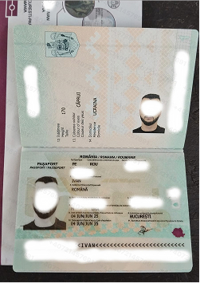

Александр Лаврушин
IT-специалист
Важно учитывать несколько требований к документам. Все документы должны быть выданы не более двух лет назад, не иметь ламинации или обложек и обязательно содержать апостиль. На этапе подачи необходимо привезти с собой все оригиналы документов — копии или сканы не принимаются. Эти нюансы часто становятся причиной задержек или сложностей, если о них не знать заранее.
Именно поэтому около 80% клиентов не собирают пакет документов самостоятельно. Мы берём этот процесс на себя: проверяем каждый документ, находим и исправляем ошибки, организуем апостилирование и готовим полный пакет так, чтобы он был принят с первого раза.
